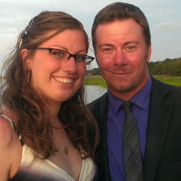
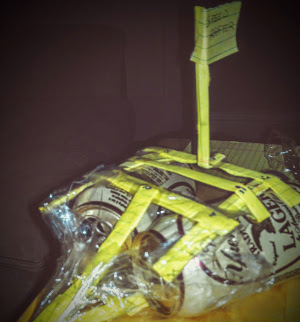
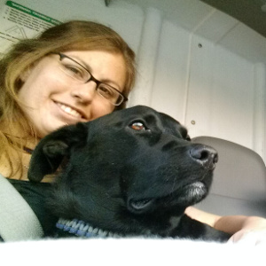
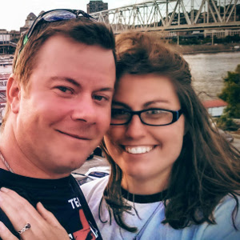
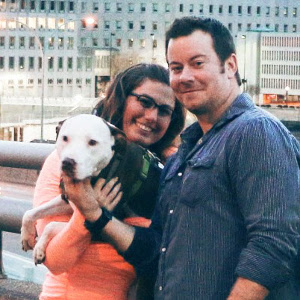
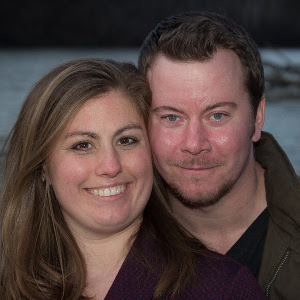
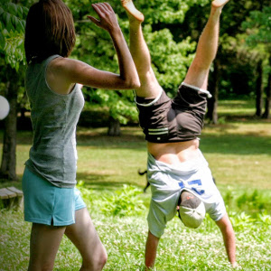
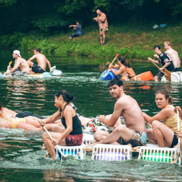
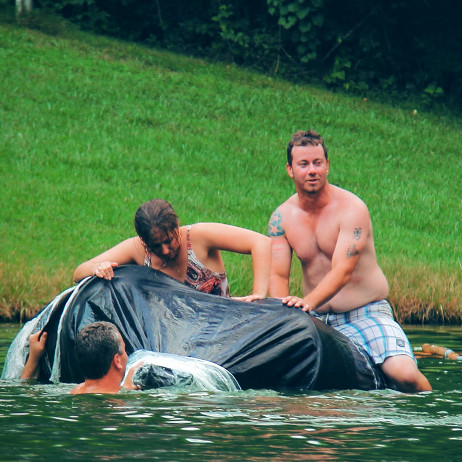
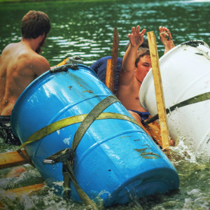

Our Story
Rollover the Timeline

The Barbecue
We haven’t spent more than a few days apart since.
While living in Memphis, I went to a friends’ house for a small barbecue. When I arrived, all the ladies were downstairs talking politics and all the guys were upstairs playing pool. Being apolitical and a terrible pool player, I searched for little ones who would play with me. I headed upstairs to the pool room where friends’ kids were playing and noticed Dustin right away. I joined in the pool game and I remember him teasing me and grabbing the back of my cue stick as I was trying to take a shot. Conversation was easy from the beginning. He was a former army ranger, loved golf. Passionate and smart, kind and funny. I had to leave the party to walk a dog but it wasn’t even a question- I wanted to see Dustin again. So I did. That same night, we went and played more pool with our friends. I’m not sure we’ve played pool since, but it was a great first night.
After a day on the golf course, in Memphis, TN, a friend of mine asked if I wanted to go to a BBQ with a bunch of his work friends. I like food, especially grilled food, so of course I said yes. The party was all married couples, but hey, at least the food was amazing. After a couple of hours there I noticed this beautiful woman playing with the kids in attendance. I naturally assumed she was married and the children were maybe even hers. I went back to play pool with some of the guys. Eventually, one of the guys very casually walked by, nudged me, and said, “She’s single.” I wasn’t completely sure I had heard him correctly, but as the night continued on, and couples were heading home, it soon became clear this woman had come alone. We started talking. The conversation was easy. It was interesting. I realized I really liked her. She had to leave to walk a friend’s dogs, but we exchanged numbers. Part of me assumed that would be the end of it, but later that night she came back and we went out to a bar with friends. The great conversation continued, and we ended the night with a kiss that made me realize how much I liked this intriguing woman. We haven’t spent more than a few days apart since.

Premature Invite
What if it was ended before it starts because of a premature Hope it Floats invite. Dustin and I first met in June. Hope it Floats was in July. We met DURING Hope it Floats Planning Season. I’m not sure I can explain what this was like for a budding relationship. Do I tell this new man about something so important to me so early? Do I tell him about this all- consuming event, when the event is a homemade raft race? If I do tell him, how do I convey how important it is to me, but not sound crazy? If he wasn’t excited about the idea, that could be a deal breaker. If he was excited, I would want to invite him. Then that meant introducing to all of my closest friends, family and strangers. I thought hard about it. I even emailed Anne for advice, “What if my first potential relationship in a very long time, was ended before it starts because of a premature Hope it Floats invite”. So, on our third date, I told him. We were eating at his country club and his reaction was more than I could hope for. He immediately started talking about plans and friends he would ask for help. That night he came back to my apartment for a movie. I fell asleep during the movie, as I am wont to do. I woke up to a moment that, for me, set in motion what we are planning to do. The man I will love for the rest of my life had proudly constructed a boat out of cans and saran wrap. It also led to our first disagreement over the perils of boat building with barrels...but I saved that for another night.
Dustin Hopes
...and jenny finally floats
My first Hope It Floats may go down as one of my favorite weekends of all time. So it was set. Jenny and I were taking our first road trip together. 8 ½ hours sitting side by side. I remember it like it was yesterday. I didn't know if I was more excited or anxious. Not only was I going to see what Hope it Floats was all about, but I was also meeting her entire friend network. One Hundred of Jenny's nearest and dearest (parents, 3 older brothers, their wives- including her best friend emily, extended family, and friends from all chapters of life) putting me in the spotlight, because I was the first boyfriend she'd brought to Hope it Floats. Luckily, the military had prepared me well for this type of situation. SERE came to mind- Survival, Evasion, Resistance, and Escape. Jokes aside, her family was amazing. They welcomed me from the second I walked through the door. Looking back, I can’t remember a time when the Cove didn’t feel like home. That’s probably because from my very first visit, Jenny’s family made it home. My first Hope It Floats may go down as one of my favorite weekends of all time. Incidentally, that first year was the first time Jenny Feldman’s boat ever floated. Coincidence? I think not.

The Move
His loyalty and support never wavered. Only 6 months into our relationship we were both planning for our next big steps in life. I was finishing my pediatric residency and he was graduating from University of Memphis and planning for law school. We decided to take a leap. Even though the relationship was young, we wanted to start the next journey together. I began to look for jobs in the cities he was applying to law school in. His application process opened up more options than mine. He got into an excellent school in Washington DC and I was excited to move with him and be close to my nephew, brother and sister in law. When I wasn’t able to find a job, Dustin changed his plan without hesitation. His loyalty and support never wavered. He called admissions at UC and was able to get his spot back after the deadline. I found a position in Cincinnati and we said goodbye to our friends and life in Memphis, loaded up a U-Haul together and settled into our loft above the casket shop for the next stage of our life.

Will You Marry Me?
It was unique, beautiful, and made a bold statement- all characteristics I felt perfectly summed up Jenny. July of 2014, Jenny and I had been together for two years. Daphne, the newest addition to the family, was fitting in perfectly, and I knew it was time to take the next step. I loved Jenny with all of my heart and wanted to spend the rest of my life with her; it was time to start shopping for a ring. How was I going to find a ring fitting for such a strong, independent, intelligent, and unique woman? I knew she wanted something out of the ordinary, a little different, but I knew nothing about diamonds. The search began. Online resources were great, but it wasn’t until I visited the local jewelers that I found out about black diamonds. From the moment I saw it, I knew it’s what I wanted to get for Jenny. It was unique, beautiful, and made a bold statement- all characteristics I felt perfectly summed up the woman I wanted to marry. Now that the ring was out of the way, I needed to ask her father for his blessing. Those of you who know Bob Feldman probably think of him as a pretty nice guy, but man, was I scared to start this conversation. We got caught in the barn one afternoon during the middle of a rainstorm, and I seized the opportunity. In true Feldman fashion, he made me feel great about the entire situation and we both walked away with smiles on our faces. I walked around for a couple of weeks with the ring in my pocket before I asked Jenny to marry me. My goal was to wait and ask her at Hope it Floats, but I couldn’t wait that long. We took the dogs for a long walk across the river and as the sun was setting, with a view of Cincinnati as a backdrop, I couldn’t wait any longer. I got down on one knee and asked. Luckily, she said……

Building a Family
I think Daphne found us. Dustin and I are both dog lovers. There have been many dogs over the years that have stolen our hearts. Maybe none quite so much as Finnegan Fineus Finland. Dustin was so supportive when I lost my dear furry friend too soon; he was a true friend. It also helped having our other dog Nashville to comfort me, but Nashville has 2 homes and a very large family. I knew Dustin really wanted an all-the time dog for more lovin’, but was patient and waited until I was ready. I don’t think he expected it to take 16 months. When we began searching for a new puppy, we visited the pound, went to events where dog shelters were set up, and searched exhaustively online. Finally, I think Daphne found us through the Cincinnati Pit Crew. Her first night she was so timid and very sweet. She’s not had a timid moment since. Her and Nashville were friends right away. Daphne has become a member of the family and brought Dustin and I even closer (though not physically as she prefers to always sit or sleep directly between us).

Eternal Hoping
We are both so grateful to our families and friends and can’t wait to celebrate with you all. Dustin and I came to the idea of a combining our nuptials with Hope It Floats independently, both wondering if the other would really go for it. He brought it up to me at the end of Hope It Floats VIII weekend as we were leaving the cove, kind of as a joke, but feeling out the situation. I immediately and with fervor said YES! Then we decided we needed to wait a few weeks and bring it up again. We both recognized we were coming off a Hope It Floats high. If you’ve ever been, I don’t need to explain this to you. The more we talked about it and thinking of all the possibilities we knew it was the perfect way to celebrate. We have so many people who have helped make this process fun instead of stressful. My parents are hosting the big day for us at their home and our favorite place, The Cove, and have been involved in every aspect of planning. If you haven’t been to the cove, I can’t wait for you to understand the joy this place brings us. It will be the perfect location to celebrate our life to come. Both of our families and friends have been instrumental in the planning of this day, everyone bringing their own expertise. From Pat building this website, David making us smile for the camera, Ashley agreeing to officiate the ceremony, Emily organizing the bachelorette party, and Scott helping us set up musicians to name just a few. We are both so grateful to our families and friends and can’t wait to celebrate with you all.HiFstory
Rollover the Timeline
The Rise from Ashes
It didn't die, SHE wouldn't let it. And in 2008 HIF came back, and came back in style, creating a form that is unrivaled. No longer would the audience be laughing, They would simply be awestruck, and the noteriety that came from having a HIF CHAMPION shirt was recognized around the world. The can't miss event gained momentum and a rather large following.The Thin Years
Every event has the years where its very existance is questioned, and HIF was no exception. The teams needed a year or two break. The audience claimed serious trauma from laughing, and so it happened, in the year 2006 the great HIF was no more, and its core existential values were questioned.The Development Years
The next few years of Hope It Floats created a fervor, but only among her most ardent of followers and those that enjoyed just watching people suffer without taking any risk. From these years, a more refined HIF was developed, and many of these elements are still used today.The Origin Story
Over ten years ago a brilliant woman and her ardent followers designed a game that would go on to inspire millions, thousands, hundreds, neigh TENS of peoples to put strange and possible harmful materials into a lake and watch them gradually sink! In that summer, the first summer of Hope It Floats, a new form of entertainment was born....for the audience.
Hope is Born!
From T-Shirt to Extravaganza. How did this crazy little raft race begin? Well it started with a T-Shirt Design and the desire to make the Cove reminiscent of Summer Camp, I think. Brian and David thought of the idea and even the design for a Tshirt; “Camp Feldman” written in a log font, maybe a party, maybe a boat race, but a T-Shirt was at the heart. I loved the shirt but didn’t really know what the big “idea” was and honestly, neither did they entirely. So we set out to develop some rules and invite some friends. The first annual Hope It Floats was born. We had 5 teams and the rules were very basic. The Hope was in it from the beginning. In the first email I can find about Hope It Floats, David said: “Oh, and somebody think of a name for the event that doesn't so closely resemble the title of a movie starring Sandra Bullock.” We never really got around to that, and I for one am thankful we didn’t. It’s all in the name.

Precompetitions
After the first year we got to thinking...we’ve got all these people gathered for the sake of recreation, let’s make the most of it. So we made an excuse to add as many fun competitions to the day as possible. Every year the day starts with ‘precompetitions’, each year they are slightly different. From rapid arithmetic to eating competitions to trenchball, bring your talents or find hidden skills, or sneak in a ringer like one member of the planning committee managed to one year with his handstand expertise.

Joy of Strangers
I get a message the night before Hope It Floats II from my roommate at the time. She had met some people at a bar the night before the race and they thought the idea was really cool for a raft race. She invited them, Hope that's OK! So a group of P&G engineers show up the next morning and get there late. They bring 8 laundry baskets, a bunch of big bouncy balls, and a plan. Honestly, that year, they didn't have to add that much "HOPE" to the equation. They were done building in probably an hour as I recall, and cruised past all of us when race time came. That plan of theirs brought many laundry basket ideas and bouncy ball boats for years to come. Bride's boat...cracked in half and sank, but it looked ecofriendly with all the recyclables.

Refining the Rules
Back to my first ever Hope It Floats; I teamed up with Jenny, her oldest brother, Bob, and his wife, Emily. We found cheap barrels from a junkyard down the road, and they met us the day before building began. So Friday night, during a game of ping pong with Bob, we started questioning the buoyancy of the barrels. Would two barrels hold up four adults? Cut to Bob and I running down the hill to the lake stripping down to our boxers, clothes flying everywhere. One chipped tooth and a violation of the rules later, we found out that yes, a barrel will hold two adults, but balancing on one is another story.

Upside Down
This is not a story of one Hope It Floats. This is a story of every hope it floats. There comes a moment each year that brings me such joy. Teams spend hours planning and piecing together their boats. There is no testing allowed until ~30 min prior to the race, so when the masterpieces hit the water, things don’t always go as planned. Some boats break very shortly after they hit the water, a crushing moment. Every year, though, there is at least one boat that hits the water and has potential but something is just slightly off. It’s usually the over-buoyant boat, often with barrels, but not always, there is a split second when you see the light bulb flash…”Wait...Why don’t we TURN IT UPSIDE DOWN!?!” Brilliant!!
The Next Generation
While HIF will always have a place in the hearts of its elder statemen, its ability to forge ahead depends on the next generation. Over the last few years our children have taken part in pretending to do something useful during the building process, and paddling the wrong way in the races. Their joy is undeniable, and someday maybe they will even contribute something productive.
The Champions
The heart and soul of the event lies in its many champions. Over the years the designers have used welding, bikes, pontoons, barrels and anything that would be guaranteed to sink Bob's team. Yet each year, at least one team manages to cross the finish line, and that team cements their place in history and HIF Lore. Champions of HIF VIII - 2013LEGENDS - 2005
Champions of HIF ILEGENDS - 2007
Champions of HIF IILEGENDS - 2011
Champions of HIF VILEGENDS - 2012
Champions of HIF VIILEGENDS - 2014
Champions of HIF IXLEGENDS - 2015
Champions of HIF X2016
Champions of HIF XI?All you can do is HOPE!